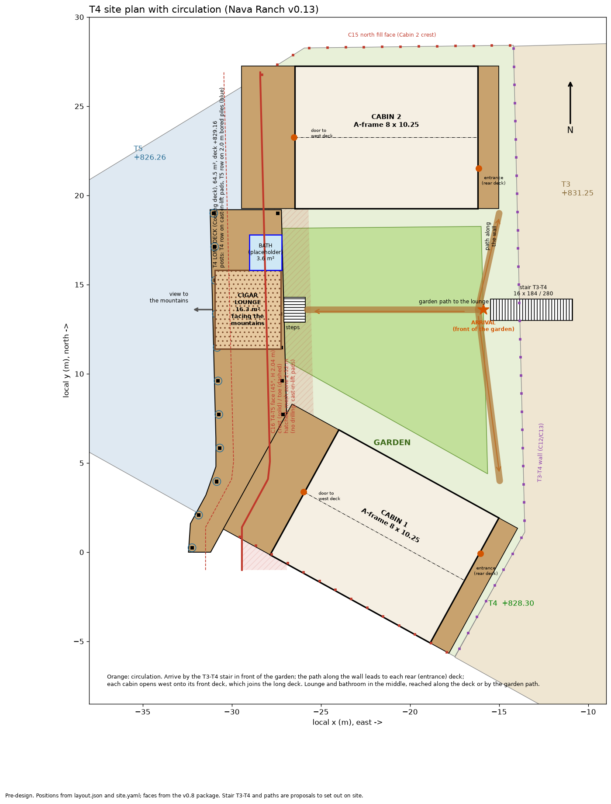
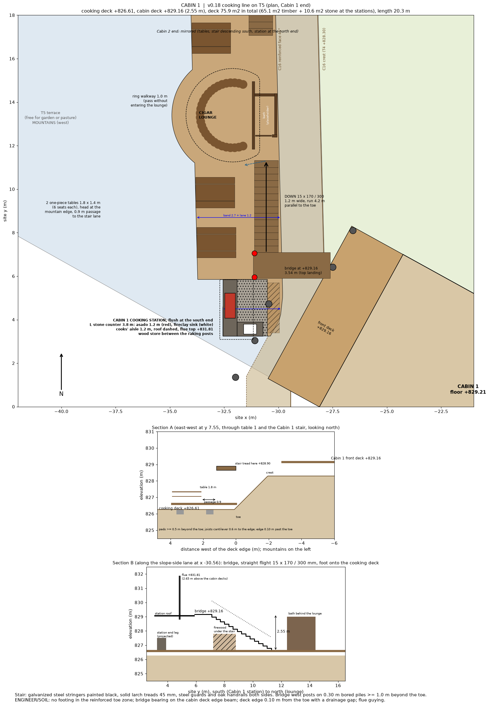

Asset: deck_t4
Owner-builder pre-design, self-reviewed with simplified checks (EC5, EC7, EC8). Loads and soil values are estimates and must be verified on site.
Bill of materials (quantities)
| category | item | quantity | unit | note |
|---|---|---|---|---|
| timber_treated | decking 28x140 larch, oiled | 2.0 | m3 | ESTIMATE |
| timber_treated | joists 50x150 @ 0.40 | 1.34 | m3 | ESTIMATE |
| timber_treated | beams 2x 50x150 | 0.6 | m3 | ESTIMATE |
| timber_treated | posts 150x150 / 120x120 (stations, lounge) | 0.76 | m3 | ESTIMATE |
| timber_sawn | lounge roof rafters 50x200 | 0.23 | m3 | ESTIMATE |
| concrete_c25 | pad footings 45x45x30 on T5 | 1.27 | m3 | ESTIMATE |
| hardware | post bases | 27 | pcs | ESTIMATE |
| hardware | deck screws A2 (box 500) | 4 | box | ESTIMATE |
| steel_trapezoid_black | lounge roof, black standing seam (curved eave cut on site) | 13.76 | m2 | ESTIMATE |
| lounge | curved built-in oak bench | 7.06 | m | ESTIMATE |
| lounge | removable glazed oak screens on the curved face (ASSUMPTION) | 7.06 | m | ESTIMATE |
| bathroom | insulated stud walls (placeholder) | 14.54 | m2 | ESTIMATE |
| bathroom | floor and roof build-up (placeholder) | 4.12 | m2 | ESTIMATE |
| bathroom | door | 1 | pcs | ESTIMATE |
| plumbing_kit | wc | 1 | pcs | placeholder |
| plumbing_kit | washbasin | 1 | pcs | placeholder |
| plumbing_kit | water_heater_30l | 1 | pcs | placeholder |
| stations | stone-faced masonry base (cement block core, local stone face) | 2.31 | m3 | ESTIMATE |
| stations | stone counter slabs 50 mm (local limestone or granite) | 5.35 | m2 | ESTIMATE |
| stations | reinforced slab 150 mm + stone floor on mortar bed (station zone, non-combustible) | 10.58 | m2 | ESTIMATE |
| stations | asado grill: steel frame, crank-height grate, ember brasero, firebrick bed | 2 | pcs | ESTIMATE |
| stations | steel hood + 250 mm steel flue to +5.2 m with rain cap, guyed to the roof posts | 2 | pcs | ESTIMATE |
| stations | station roofs: black standing-seam steel on timber | 9.8 | m2 | ESTIMATE |
| stations | stone plinths for roof posts | 8 | pcs | ESTIMATE |
| stations | firewood/charcoal bins between the raking posts (oak, iron) | 2 | pcs | ESTIMATE |
| station_water | fireclay sink 600x450, undermounted in the stone counter | 2 | pcs | ESTIMATE |
| station_water | brass bridge tap (or galvanized steel) | 2 | pcs | ESTIMATE |
| station_water | frost-safe supply: PE 25 in a trench at 0.9 m (ASSUMPTION route 25 m per station, from the nearest cabin services room) | 50 | m | ESTIMATE |
| station_water | stop-and-drain (drain-down) valve at frost depth + valve box + key; insulated riser in the stone base | 2 | pcs | ESTIMATE |
| station_water | waste 50 mm to a grease trap, falls 2 % (ASSUMPTION 8 m per station) | 16 | m | ESTIMATE |
| station_water | precast concrete grease trap, buried, with cast-iron lid; outlet to site drainage/septic (connection excluded, no site data) | 2 | pcs | ESTIMATE |
| stairs | treads and bridge decking: solid larch 45 mm | 0.82 | m3 | ESTIMATE |
| stair_kit | stringers and bridge beams: galvanized steel PFC 200, painted black | 31.26 | m | ESTIMATE |
| stair_kit | bridge posts SHS 100, galvanized, base plates | 10.61 | m | ESTIMATE |
| concrete_c25 | bored piles 0.30 x 2.0 m for the bridge posts (>= 1.0 m beyond the toe) | 0.62 | m3 | ESTIMATE |
| stair_kit | guards: steel posts and rods, galvanized black | 28.16 | m | ESTIMATE |
| stair_kit | oak handrails both sides | 20.26 | m | ESTIMATE |
| stair_kit | tread brackets, stainless fixings, anchors | 2 | set | ESTIMATE |
| picnic | one-piece picnic table 1.8 m, solid oak/larch, X legs, bolted (3 seats per side) | 4 | pcs | ESTIMATE |
| misc | flashings, fixings, sealants | 1 | global | ESTIMATE |
Drawing sheets

